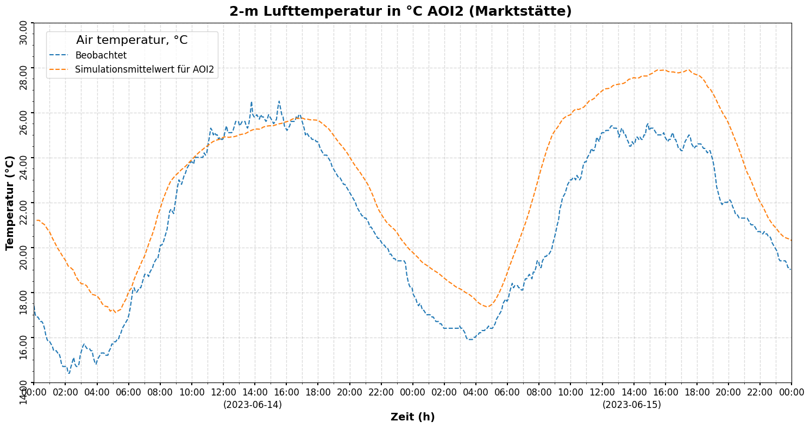

Comparison of Observed vs Simulation Data
This notebook presents a comparative analysis between observed temperature data from the city of Konstanz (Markstaette) and simulated temperature data (6-hour aggregate). The primary goal is to assess the correlation and discrepancies between the two datasets, providing insights into the accuracy of the simulation model.
1. Import dependencies
import pandas as pd
import matplotlib.pyplot as plt
import matplotlib.ticker as ticker
import numpy as np
from matplotlib.dates import DateFormatter
import matplotlib.dates as mdates
2. Import, modify and optimize data
# Load the observed and simulated temperature data files
obs_file_path = f"./Data/Observation Data Konstanz/_obsMark_14_15.csv"
sim_file_path = f"./Data/_other/markstaette_simulation_230614_agg6.csv"
# Read the CSV files into pandas DataFrames
obs_data_raw = pd.read_csv(obs_file_path)
sim_data_raw = pd.read_csv(sim_file_path)
# Create copies of the raw data for cleaning and manipulation
obs_data = obs_data_raw.copy()
sim_data = sim_data_raw.copy()
# Convert 'Messzeitpunkt' in observed data to datetime objects
obs_data['Messzeitpunkt'] = pd.to_datetime(obs_data['Messzeitpunkt'])
# Convert 'Time (hr)' in simulated data to timedelta objects
sim_data['Time (hr)'] = pd.to_timedelta(sim_data['Time (hr)'] + ':00')
# Align simulated data timestamps with observed data by adding the minimum observed timestamp
base_time = obs_data['Messzeitpunkt'].min()
sim_data['Datetime'] = base_time + sim_data['Time (hr)']
# Select 'Temperatur' and 'Messzeitpunkt' columns from observed data
obs_data_subset = obs_data.iloc[:, [4, 5]].copy()
# Round the 'Messzeitpunkt' to the nearest minute and store as 'DateTime'
obs_data_subset['DateTime'] = pd.to_datetime(obs_data_subset['Messzeitpunkt'], format='%H:%M:%S').dt.floor('min')
def round_to_nearest_10_minutes(dt):
"""
Rounds a given datetime object to the nearest 10-minute interval.
"""
minutes = dt.minute
remainder = minutes % 10
if remainder == 0:
return dt
elif remainder < 5:
return dt - pd.Timedelta(minutes=remainder)
else:
return dt + pd.Timedelta(minutes=(10 - remainder))
# Apply the rounding function to create 'DateTimeRound'
obs_data_subset['DateTimeRound'] = obs_data_subset['DateTime'].apply(round_to_nearest_10_minutes)
# Group by 'DateTimeRound' and calculate the mean 'Temperatur'
obs_data_subset_grouped = obs_data_subset.groupby('DateTimeRound', as_index=False).agg({'Temperatur': 'mean', 'DateTimeRound': 'first'})
# Display the first few rows of the grouped observed data
obs_data_subset_grouped.head()
| Temperatur | DateTimeRound | |
|---|---|---|
| 0 | 17.40 | 2023-06-14 00:00:00 |
| 1 | 16.95 | 2023-06-14 00:10:00 |
| 2 | 16.85 | 2023-06-14 00:20:00 |
| 3 | 16.70 | 2023-06-14 00:30:00 |
| 4 | 16.50 | 2023-06-14 00:40:00 |
# Select 'Datetime' and 'Mean (BS)' columns from simulated data
sim_data_subset = sim_data.iloc[:,[11,3]].copy()
# Round the 'Datetime' column to the nearest minute
sim_data_subset['DateTimeRound'] = pd.to_datetime(sim_data_subset['Datetime'], format='%H:%M:%S').dt.floor('min')
# Display the first few rows of the processed simulated data
sim_data_subset.head()
| Datetime | Mean (BS) | DateTimeRound | |
|---|---|---|---|
| 0 | 2023-06-14 00:10:26 | 21.20 | 2023-06-14 00:10:00 |
| 1 | 2023-06-14 00:20:26 | 21.20 | 2023-06-14 00:20:00 |
| 2 | 2023-06-14 00:30:26 | 21.09 | 2023-06-14 00:30:00 |
| 3 | 2023-06-14 00:40:26 | 21.01 | 2023-06-14 00:40:00 |
| 4 | 2023-06-14 00:50:26 | 20.83 | 2023-06-14 00:50:00 |
# Merge the observed and simulated datasets on the 'DateTimeRound' column
merged_data = pd.merge(obs_data_subset_grouped, sim_data_subset, on='DateTimeRound', suffixes=('_obs', '_sim'))
# Calculate the standard deviation for the observed temperature
std_obs = merged_data['Temperatur'].std()
# Calculate the standard deviation for the simulated temperature
std_sim = merged_data['Mean (BS)'].std()
# Calculate the Pearson correlation coefficient between observed and simulated temperatures
correlation = merged_data['Temperatur'].corr(merged_data['Mean (BS)'])
# Display the calculated standard deviations and correlation
print(f"Standard Deviation (Observed):, {std_obs:.2f}")
print(f"Standard Deviation (Simulated):, {std_sim:.2f}")
print(f"Correlation: {correlation:.2f}")
Standard Deviation (Observed):, 3.61
Standard Deviation (Simulated):, 3.38
Correlation: 0.93
3. Compute and plot correlation
# Create a figure and an axes object for the plot
fig, ax = plt.subplots(figsize=(8, 8), facecolor='w', edgecolor='k')
# Set the title of the plot
ax.set_title('Correlation', fontsize=16, weight='bold')
# Plot observed vs. simulated temperatures as a scatter plot
ax.scatter(merged_data['Temperatur'], merged_data['Mean (BS)'], s=15, marker='o', alpha=0.5, color='blue')
# Add a line of best fit to the scatter plot
m, b = np.polyfit(merged_data['Temperatur'], merged_data['Mean (BS)'], 1)
ax.plot(merged_data['Temperatur'], m*merged_data['Temperatur'] + b, color='red', label='Best Fit Line')
# Set labels for the x and y axes
ax.set_xlabel(f"Observed Temperature (°C)", fontsize=14, weight='bold')
ax.set_ylabel(f"Simulated Temperatures (°C)", fontsize=14, weight='bold')
# Configure grid lines and minor ticks
ax.grid(which='major', axis='both', linestyle='-', linewidth=1, color='#000000', alpha=0.15)
ax.minorticks_on()
ax.tick_params(axis='x', labelsize=12, rotation=0, width=1.5)
ax.tick_params(axis='y', labelsize=12, rotation=0, width=1.5)
# Ensure the aspect ratio is equal to make the correlation visually accurate
ax.set_aspect(1)
# Set the y-axis limits and ticks
ax.set_ylim([17, 29])
ax.set_yticks(np.arange(17, 30, 1))
# Set the x-axis limits and ticks
ax.set_xlim([14, 27])
ax.set_xticks(np.arange(14, 28, 1))
# Add the correlation coefficient as text on the plot
plt.text(0.02, 0.97, f'Correlation: {correlation:.2f}',
fontsize=14,
weight='bold',
transform=plt.gca().transAxes)
plt.close()
4. Plot line graph (Obs vs Sim)
# Create a figure and an axes object for the plot
fig, ax = plt.subplots(figsize=(18, 8), facecolor='w', edgecolor='k')
# Set the main title of the plot
plt.suptitle("2-m Lufttemperatur in °C AOI2 (Marktstätte)", fontsize=18, weight='bold')
plt.subplots_adjust(top=0.94)
# Configure grid lines for better readability
ax.grid(which="major", axis="y", linestyle="--", linewidth=1, color="#00000050", alpha=0.15)
ax.grid(which="both", axis="x", linestyle="--", linewidth=1, color="#00000050", alpha=0.15)
# Enable minor ticks and set tick parameter styles
ax.minorticks_on()
ax.tick_params(axis='x', labelsize=12, rotation=0, width=1.5)
ax.tick_params(axis='y', labelsize=12, rotation=90, width=1.5)
# Format y-axis labels to two decimal places
ax.yaxis.set_major_formatter(ticker.FuncFormatter(lambda y, pos: f'{y:.2f}'))
# Format x-axis labels to display only hours and minutes
ax.xaxis.set_major_formatter(DateFormatter('%H:%M'))
# Set major and minor ticks for the x-axis to represent hourly intervals
ax.xaxis.set_major_locator(mdates.HourLocator(interval=2)) # Major ticks every 2 hours
ax.xaxis.set_minor_locator(mdates.HourLocator(interval=1)) # Minor ticks every 1 hour
# Set x and y axis labels
ax.set_xlabel(f"Zeit (h)", fontsize=14, weight='bold', labelpad=20)
ax.set_ylabel(f"Temperatur (°C)", fontsize=14, weight='bold')
# Set margins for the plot
ax.margins(0.01)
# Define and set the start and end times for the x-axis to cover the period of interest
start_time = pd.to_datetime('2023-06-14 00:00:00')
end_time = pd.to_datetime('2023-06-16 00:00:00')
ax.set_xlim([start_time, end_time])
# Set the y-axis limits and ticks
ax.set_ylim([14, 30])
ax.set_yticks(np.arange(14, 31, 2))
# Plot the observed temperature data
line1, = ax.plot(obs_data['Messzeitpunkt'], obs_data['Temperatur'], label='Beobachtet', linestyle='--')
# Plot the simulated temperature data
line2, = ax.plot(sim_data['Datetime'], sim_data['Mean (BS)'], label='Simulationsmittelwert für AOI2', linestyle='--')
# Add notes for specific dates on the x-axis
note1 = f"(2023-06-14)"
note2 = f"(2023-06-15)"
ax.text(0.25, -0.05, note1, transform=ax.transAxes, fontsize=12, ha='left', va='top')
ax.text(0.75, -0.05, note2, transform=ax.transAxes, fontsize=12, ha='left', va='top')
# Add a legend to the plot, positioned outside the plot area
ax.legend(title=" Air temperatur, °C ",
title_fontsize=16,
fontsize=12,
loc="center left",
bbox_to_anchor=(0.01, 0.91),)
# Display the plot
plt.show()
